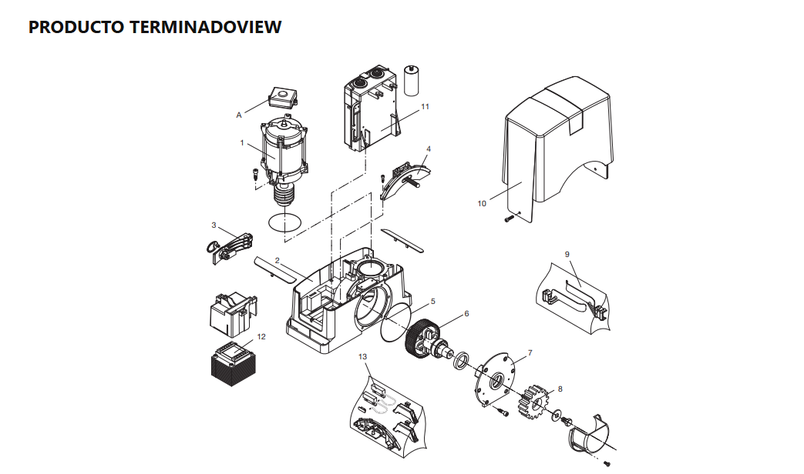

BULL 5M — despiece original

Diagrama y tabla de códigos proporcionados por MG Portones. Puede corregir la posición de cada punto desde el editor.
Motor corredizo de cremallera · BULL 5M como variante inicial

Diagrama y tabla de códigos proporcionados por MG Portones. Puede corregir la posición de cada punto desde el editor.